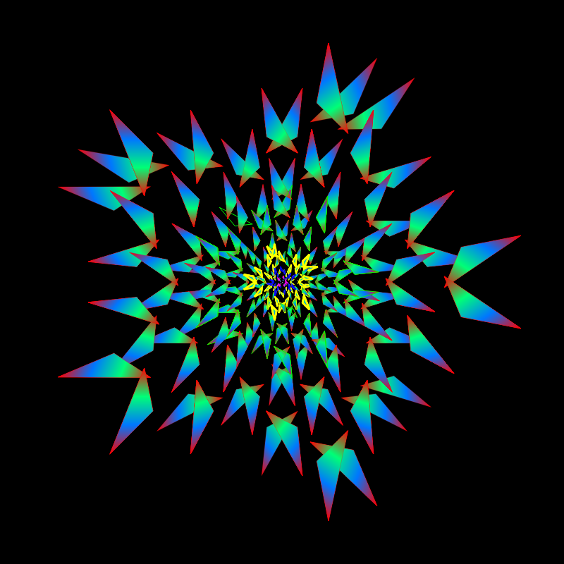

Am creat acest site pentru a explora diferite idei si subiecte pasionante. De asemenea, site-ul inglobeaza unele proiecte realizate de mine si contine articole asupra unor teme care mi-au starnit interesul. Lectura placuta a site-ului!

Citate:
"Universul este un cerc al cărui centru e pretutindeni și a cărui circumferință nu e nicăieri." -Blaise Pascal
"De ce îi este omului de astăzi foame? De iubire şi de sens." -Nicolae Steinhardt
"Un om nehotărât ajunge la fiecare pas pe pragul unei alternative, adică în situația de a vedea că este într-adevăr o ființă liberă. Un om hotarât este lipsit de acest neajuns." -Lucian Blaga
"Nature uses only the longest threads to weave her patterns, so each small piece of her fabric reveals the organization of the entire tapestry." -Richard Feynman
"Adevarul este atat de obscur in zilele acestea, iar falsitatea atat de bine impamantenita, incat daca nu iubim adevarul nu il putem cunoaste." -Blaise Pascal